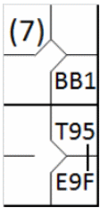
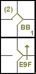
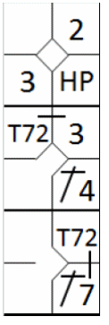

action { batter -> E6F }
/* Le frappeur suivant frappe un simple au champ centre et profite d'un relais du champ centre vers la troisième base pour atteindre la deuxième base.*/
action { batter -> 1B8 T85 , runner1 -> ++ }

Ceci est généralement utilisé pour justifier l'avance d'un coureur (y compris le coureur-batteur) qui, atteignant la base sur une balle frappée, profite d'un jeu sur un coureur précédent pour avancer.
En plus de la définition donnée ci-dessus, il convient de préciser que ces avancées supplémentaires sont toujours dues à des lancers depuis le champ extérieur vers le champ intérieur.
La notation à utiliser est « T » suivi de deux nombres, le premier représentant le défenseur qui a effectué le lancer et le second identifiant la base vers laquelle il a lancé.
Exemple 79:
Après un simple qui permet au coureur d'avancer de deux bases, le frappeur profite d'un lancer du joueur de champ
centre vers la troisième base pour continuer jusqu'à la base suivante.
Son arrivée en deuxième base est enregistrée avec un « T » suivi du numéro identifiant le joueur de champ centre (8)
qui a lancé la balle, et celui de la base vers laquelle la balle a été lancée, c'est-à-dire la troisième base (5), que la
base soit couverte par le défenseur de la troisième base ou l'arrêt-court.
| WBSC | Transcription dans l'outil de scorage | Outil |
|---|---|---|
|
|
/* Le premier batteur frappe une balle en hauteur sur le joueur d'arrêt court, qui laisse
tomber la balle. */ action { batter -> E6F } /* Le frappeur suivant frappe un simple au champ centre et profite d'un relais du champ centre vers la troisième base pour atteindre la deuxième base.*/ action { batter -> 1B8 T85 , runner1 -> ++ } |
|
Le scoreur doit observer attentivement la progression du frappeur-coureur pour déterminer s'il a atteint la base supplémentaire grâce à un coup sûr (auquel cas il obtient un double) ou grâce à un choix du défenseur.
Exemple 80: Dans cet exemple, le frappeur-coureur profite d'un lancer du défenseur de champ extérieur pour avancer en deuxième base,
| WBSC | Transcription dans l'outil de scorage | Outil |
|---|---|---|
|
 |
/* Le premier frappeur gagnge la première base sur un 'base on ball' */ action { batter -> BB } /* Le frappeur suivant envoie une balle en hauteur au champ droit, mais le défenseur rate la prise. Le coureur en première base avance de deux bases grâce à cette erreur, et le frappeur profite de cette choix défensif pour avancer en deuxième base. */ action { batter -> E9F T95 , runner1 -> (2)+ } |

|
pendant que dans l' Exemple 81: Cette même avance est une conséquence directe d'une erreur.
| WBSC | Transcription dans l'outil de scorage | Outil |
|---|---|---|

|
/* Le premier frappeur gagnge la première base sur un 'base on ball' */ action { batter -> BB } /* Le frappeur suivant envoie une balle en hauteur au champ droit, et le défenseur commet une erreur en voulant la rattrapée. Le coureur en première base avance de deux bases grâce à cette erreur, et le frappeur en profite pour avancer en deuxième. */ action { batter -> E9F+ , runner1 -> (2)+ } |
 |
Exemple 82: Sur le coup sûr, le coureur de tête marque, tandis que l'autre coureur et le frappeur-coureur atteignent tous deux une base supplémentaire lorsque le joueur de champ extérieur lance vers le marbre dans une tentative douteuse d'empêcher qu'un point ne soit marqué.
| WBSC | Transcription dans l'outil de scorage | Outil |
|---|---|---|
|
 |
/* Le premier frappeur gagne la première base sur un 'Hit by Pitch' */ action { batter -> HP } /* Le frappeur suivant réussit un coup sûr en deuxième base, le coureur avance */ action { batter -> 1B4 , runner1 -> + } /* Le frappeur suivant envoie la balle au champ gauche, le coureur en deuxième base tente d'atteindre le marbre. Le frappeur-coureur et le coureur en première base profitent de cette occasion pour avancer. */ action { batter -> 1B7 T72 , runner1 -> + T72 , runner2 -> ++ } |

|